Blog post by Katy co-founder of Munjiri Videos (I'm one of the two videographer's helping businesses share what they do!)

The Client: Ajiri Tea (A social-enterprise tea brand based in Kenya and the USA)
The Deliverables: Brand Videos For Website, Monthly Social Media Videos, Product Photography
Ajiri Tea is a tea company but, it is way way more than that! They work with small scale tea farmers in western Kenya and provide employment for women who handcraft every single tea label from dried banana bark. The profits from Ajiri Tea are then put into the Ajiri Foundation which pays for orphan education and holistic care.
The challenges:
Like many businesses the time and mental drain of social media and feeling like Oh! I should be filming this whilst you have so many other things to do in your brand was becoming a problem. Kate (the co-founder of Ajiri) said that usually when she's at the camp or in the field she had this annoying pressure that she should be filming it or photographing when she also has a job to do and wants to be in the moment too! So having us filming and photographing in the field took that pressure off. We created two longer videos one about Ajiri Tea as a whole and then one more focused on the Ajiri Foundation and then built a helpful library of photos and social media videos delivered monthly so Ajiri Tea could use them on their website and social media. This also gave them a whole fresh update as a lot had changed since we last filmed a video for them!
It's also difficult to create something that's easy to understand for someone who is new to the brand, when there are so many different parts to the story. So we focused a lot on creating a really clear story, but one that was also really beautiful and interesting. Taking into consideration lighting, framing, audio, story arcs and always making sure people feel as comfortable as possible when they are on camera.
Ajiri also wanted something down to earth and true to them. Ajiri is a family business started by two sisters, there's always kids running around maybe a cow or two (or on this trip a rock hyrax) and thats what makes them amazing! We wanted to show the real on the ground impact experienced by the women, the students and the community. So we thought a lot about the marketing strategy side of things, but with our documentary way of filming. Spending time with the label makers, students and filming everyday moments.
If you want to get back to running your business while someone else takes care of the video side of things? Check out our video production services.
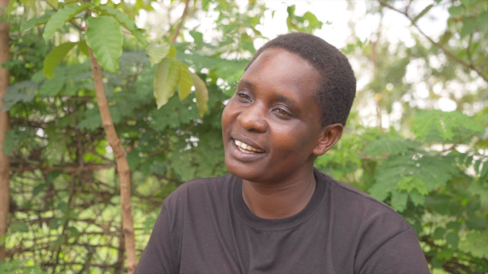
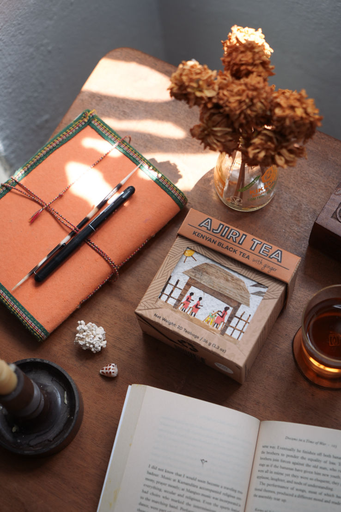
So before I headed to Kisii in Western Kenya to film, I was researching and getting back to the core of what Ajiri is selling and how it helps people. Not only is there tea delicious, it's supporting a whole community! I collected Ajiri Tea stories, the highs, the lows, the details and then mapped out a clear plan for the shape of the videos and photos. Kate organised the locations where we would be filming and I packed my equipment, shot lists and interview questions.
Over the week we filmed the camp where the Ajiri students take part in lots of activities from computer literacy to farming. We captured interviews, stories, a lot of b-roll and fun moments. Then we headed to Kisii in western Kenya to catch up with the label making team and the emerald tea fields, capturing sounds and stories as we went. Always thinking about colour, framing, light and sound so the viewer feels like they're in the Ajiri Tea world and helps them feel connected to the real people behind each box of tea.
Back home to my chicken pox covered toddler, I went through the hours of footage, picking the best bits, listening to all the interviews, following the story arc, matching music, applying colour corrections and checking in with Kate if there were any tweaks needed.
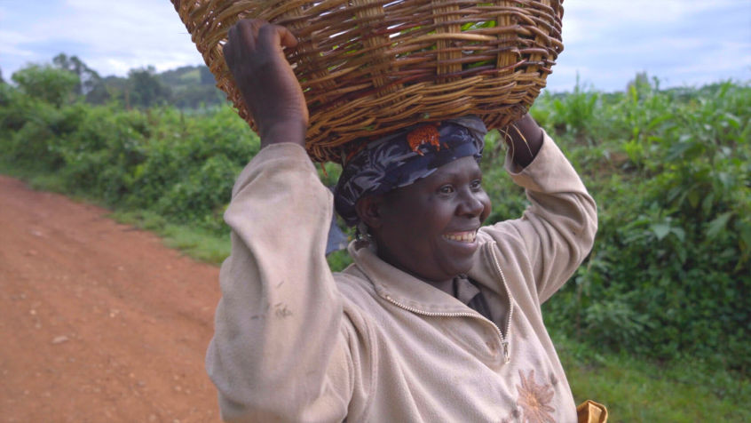
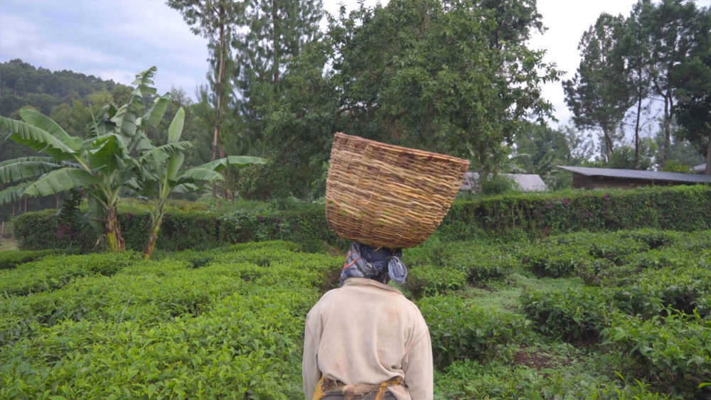
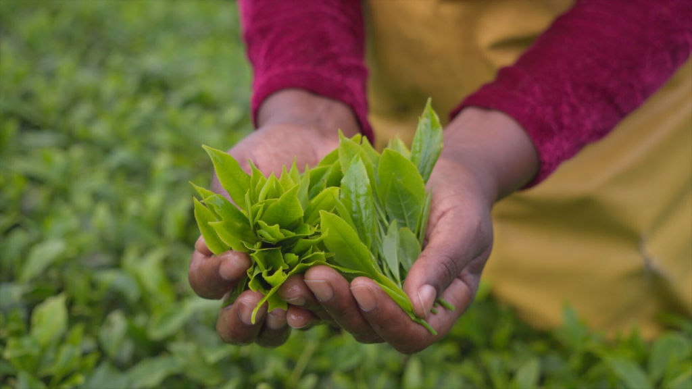
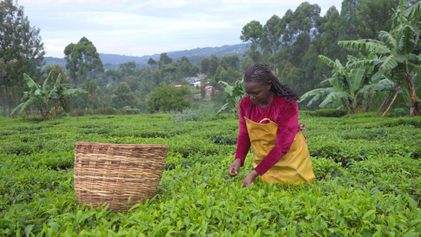
Some of the highlights of the trip included, getting very stuck in the mud, searching for chameleons with torches in the pitch dark and rock hyraxes joining us for our tea break. As well as of course hearing all the positive changes that have been happening with the students and rest of the team from table banking, to how much joy one of the students felt when going swimming for the first time, because of a trip with Ajiri, to old students becoming mentors.
For Ajiri Tea we created two main evergreen brand videos, one telling the story of Ajiri Tea in general and then another explaining the story of the Ajiri Foundation. We also sent them a library of photos to use across their website and social media, as well as two short portrait videos a month which they could upload to their social media channels.
"Katy! We are all together (Regina, Difna, Ann, Sara) in Kenya and just watched your main video you sent. Regina and Difna loved it and we wanted to call you to tell you how wonderful you are! They truly loved it, and I thought you should hear their enthusiasm :) ... Continuously really happy with the reels!
— Kate Holby, Co-Founder of Ajiri Tea
If you would like to see more examples of our videos check out our portfolio.
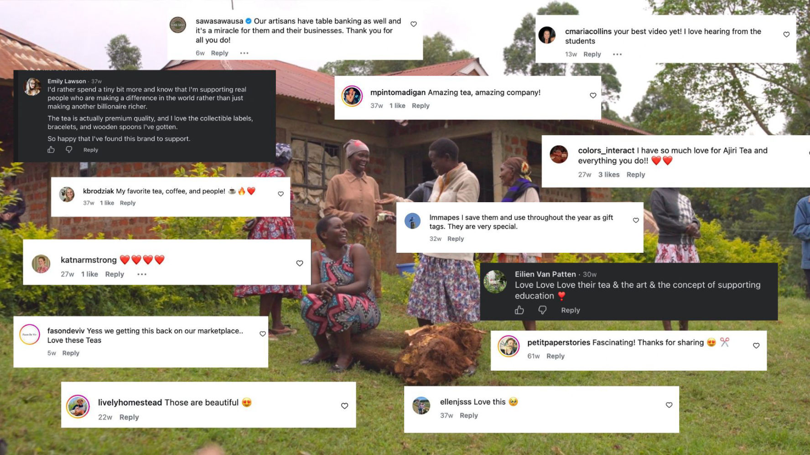
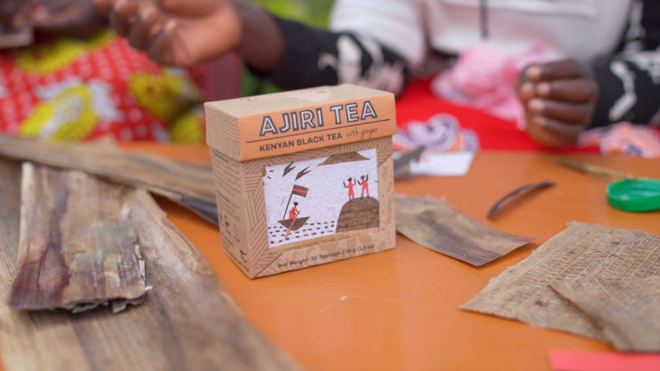
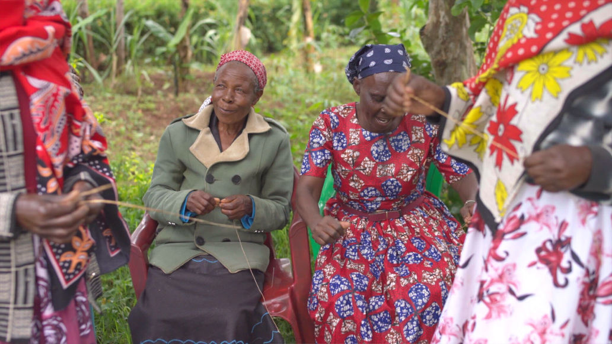
If you have a creative brand or social enterprise that you have shaped with care, but feel overwhelmed by the video side of things, we would love to help. We're Katy and Eugene and we take your marketing goals and turn them into honest down-to-earth videos that handle the hard work for you online. We take care of all the research, scripting, planning, and editing while keeping you completely relaxed on camera. Creating a beautiful visual world that your people can't wait to step into, while you stay present in your business.
katy@munjiri.com
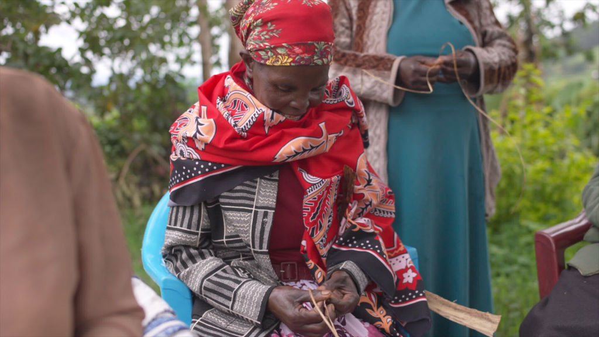
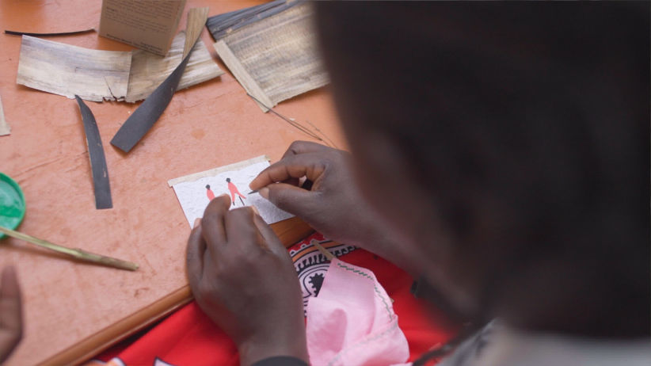
Blog post by Katy co-founder of Munjiri Videos (I'm one of the two videographer's helping businesses share what they do!)